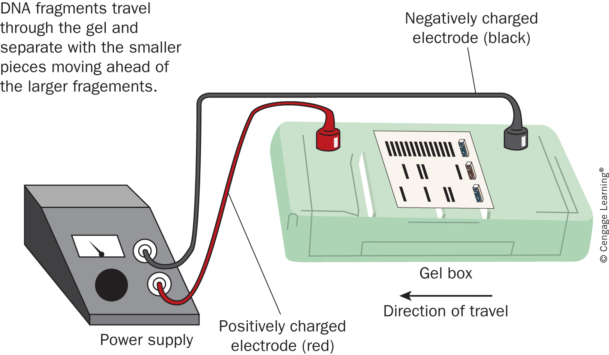
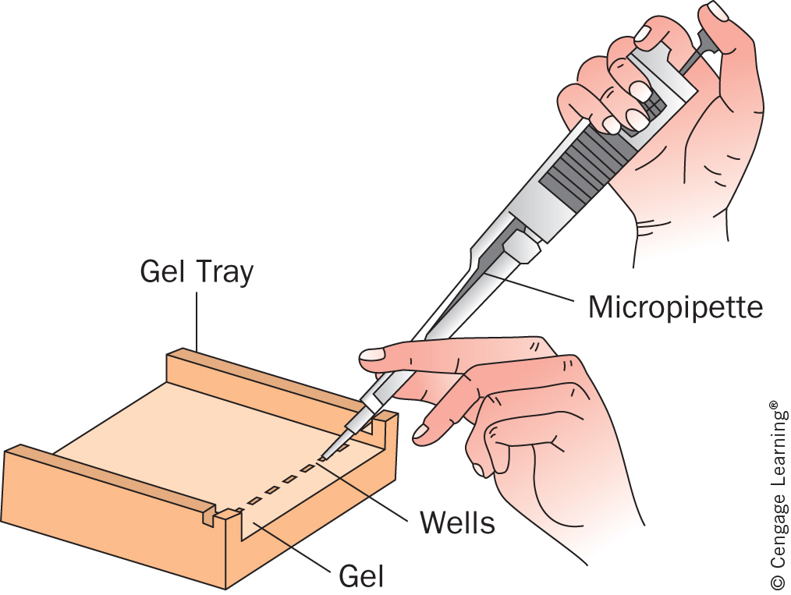

What You Need to Master
🩸 Blood Evidence
Understand blood composition, blood types, presumptive testing, and how bloodstain patterns can reconstruct events.
ABO/RhKastle-MeyerSpatter🧬 DNA Evidence
Understand DNA structure, STRs, electrophoresis, and how DNA profiles are compared.
STRsGel ElectrophoresisCODIS🔎 Evidence Thinking
Use scientific reasoning: evidence can include, exclude, support, or weaken a claim — but it must be interpreted carefully.
LimitationsProbabilityBlood Basics
Blood is a mixture of cells, cell fragments, and fluid. In forensic science, blood may help identify a victim or suspect, show movement, and reconstruct part of the event.
Plasma
Liquid portion that carries water, proteins, nutrients, hormones, and waste.
Red Blood Cells
Carry oxygen using hemoglobin. They are the most abundant blood cells.
White Blood Cells
Contain nuclei and DNA. Important for DNA analysis.
Platelets
Cell fragments that help with clotting.

Blood Typing: ABO and Rh
Blood type is based on molecules called antigens on the surface of red blood cells. The immune system can produce antibodies against antigens it recognizes as foreign.
Type A
A antigens on red blood cells; anti-B antibodies in plasma.
Type B
B antigens on red blood cells; anti-A antibodies in plasma.
Type AB
A and B antigens; neither anti-A nor anti-B antibodies.
Type O
No A or B antigens; anti-A and anti-B antibodies.


Is It Blood? Kastle-Meyer Test
A presumptive test gives an early indication that a substance may be blood. A positive result does not prove the substance is human blood, and it does not identify a person.
Use a sterile swab and avoid contamination.
This chemical can turn pink when oxidized.
Hemoglobin can catalyze the reaction.
Rapid pink color suggests blood may be present.

How Did the Blood Get There?
Bloodstain pattern analysis studies the size, shape, distribution, and location of bloodstains. The goal is to infer possible motion, direction, impact, and origin — not to guess.
Passive Stains
Form mainly from gravity: drops, flows, pools.
Transfer Stains
Form when a bloody object contacts another surface.
Projected / Impact Stains
Form when force causes blood to travel through the air.


Angle of Impact
The angle of impact estimates the angle at which a blood droplet struck a surface.
DNA Basics
DNA is the molecule that stores genetic instructions. Most human DNA is the same from person to person, but some regions vary enough to help identify individuals.
Nucleotide
DNA building block made of sugar, phosphate, and a base.
Base Pair
A pairs with T; C pairs with G.
Chromosome
Large packaged DNA structure found in the nucleus.
STR
Short Tandem Repeat; repeated DNA region useful in forensic profiling.

DNA Profiling and Gel Electrophoresis
DNA profiling compares selected DNA regions. The profile is not the whole genome; it is a pattern from specific locations that can be compared to known samples.
Blood, saliva, skin cells, hair roots, or other biological material may contain DNA.
DNA is separated from cells and purified.
PCR makes many copies of target DNA regions.
Gel electrophoresis separates DNA fragments by size.
Investigators compare evidence profiles to reference samples.



How Blood and DNA Evidence Are Used
Identifying Unknown Remains
DNA can help identify victims when other methods are difficult, especially by comparing evidence to relatives or reference samples.
Excluding Suspects
If a biological sample does not match a suspect’s profile, that person may be excluded as the source of that sample.
Reconstructing Events
Bloodstains can suggest movement, impact direction, sequence, and possible positions during an event.


Practice Evidence Analysis
Blood Typing Scenario
A sample clumps with anti-A serum and anti-Rh serum, but not with anti-B serum. What is the blood type?
Angle Practice
A stain is 7 mm wide and 20 mm long. Estimate the angle of impact.
DNA Profile Logic
Evidence profile: Locus 1 = 10,12; Locus 2 = 8,9; Locus 3 = 14,14.
Suspect A: 10,12 | 8,9 | 14,14
Suspect B: 10,11 | 8,9 | 14,15
Quick Check
Which statement is most accurate?
Student Guided Packet
This section can be printed as a rough student packet or used as the starting structure for your PDF/Google Doc packet.
Unit 5 Student Packet: Blood & DNA Evidence
Name: Period:
1. Blood Basics
Blood is made of plasma, red blood cells, white blood cells, and .
The cells most useful for DNA evidence are because they contain nuclei.
2. Blood Typing
Blood type is determined by on red blood cells. Antibodies can cause red blood cells to .
Why is blood typing considered class evidence?
______________________________________________________________________________
3. Presumptive Blood Tests
The Kastle-Meyer test is a test. A rapid pink color means blood be present.
4. Bloodstain Patterns
Three major categories are passive, transfer, and stains.
Formula: $\sin(\theta)=\frac{width}{length}$
Practice: A stain is 6 mm wide and 15 mm long. Calculate angle of impact.
______________________________________________________________________________
5. DNA Basics
DNA is made of repeating units called . The base-pairing rules are A with and C with .
6. STRs and DNA Profiling
STR stands for . STRs are useful because people can have different numbers of .
7. Evidence Claim
Write a 4–5 sentence CER paragraph explaining how blood and DNA evidence can support or weaken a suspect connection.
______________________________________________________________________________
______________________________________________________________________________
______________________________________________________________________________